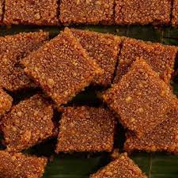

Welithalapa

Ingredient
- White raw rice flour - 500g
- Sugar - 450g
- Desiccated coconut -180g
- Thick coconut milk - 01 cup
- Ground cardamom
- Salt - 02 tsp
Method
- Mix desiccated coconut and flour until the flour forms into tiny balls like beads.
- If this mixture is dry, sprinkle some water so that it helps to form balls.
- Then transfer this into a steamer.
- Now steam this around 35 - 45 mins.
- While the pittu is still warm we need to again separate
flour beads and keep this aside.
- The next step is to make the sugar syrup. Put small amount of sugar to a pan
and heat until it becomes dark brown.
- When sugar is bubbling add hot water.
- Then add remaining sugar and 01 cup of more hot water.
- When sugar dissolves completely add salt and coconut milk.
- Heat coconut milk well under medium heat. Meanwhile we can
add ground cardamom to this.
- When sugar syrup is ready add flour beads.
- Mix this thoroughly until flour absorbs all sugar syrup.
- When the mixture becomes sticky switch off the flame.
- Transfer this mixture into a tray and make it flatten.
- Then let this cool down a bit and cut into pieces.